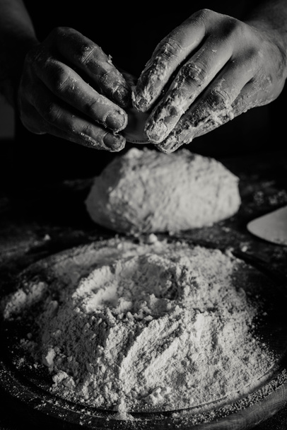

<div class="container-fluid py-5">
    <div class="container">
        <div class="section-title">
            <h4 class="text-primary text-uppercase" style="letter-spacing: 5px;">Sobre Nosotros</h4>
            <h1 class="display-4">Sirviendo desde 2005</h1>
        </div>
        <div class="row">
            <div class="col-lg-4 py-0 py-lg-5">
                <br>
                <h1 class="mb-3">Nuestra Historia</h1>
                <h5 class="mb-3">Donde la tradición se encuentra con el sabor auténtico.</h5>
                <p>Desde nuestros inicios en el corazón de Sucre, en Salteñería Mary nos hemos dedicado a ofrecer lo mejor de la tradición culinaria boliviana. Cada salteña que elaboramos es un testimonio de nuestro compromiso con la autenticidad y el sabor que nos distingue.</p>
            </div>
            <div class="col-lg-4 py-5 py-lg-0" style="min-height: 500px;">
                <div class="position-relative h-100">
                    
                </div>
            </div>
            <div class="col-lg-4 py-0 py-lg-5">
                <br>
                <h1 class="mb-3">Nuestra Vision</h1>
                <p> Nos esforzamos por ser reconocidos como el referente indiscutible de la tradición culinaria boliviana en Sucre y más allá, siendo un faro de excelencia que ilumina el camino hacia la autenticidad y el deleite gastronómico.</p>
                <h6 class="mb-3"><i class="fa fa-check text-primary mr-3"></i>Somos el hogar de las mejores salteñas.</h6>
                <h6 class="mb-3"><i class="fa fa-check text-primary mr-3"></i>Colaboramos con la comunidad local.</h6>
                <h6 class="mb-3"><i class="fa fa-check text-primary mr-3"></i>Superamos las expectativas.</h6>
            </div>
        </div>
    </div>
</div>